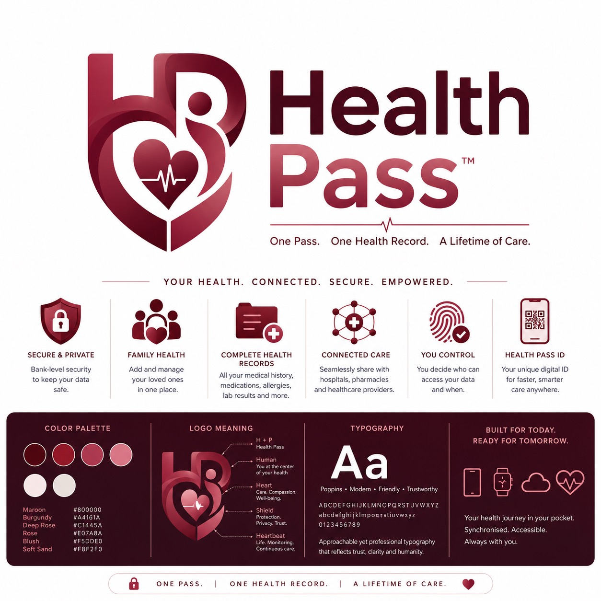

Unified medical history
Visits, diagnoses, prescriptions, allergies, documents, and lab results stay organized around one digital ID.
Health Pass gives every person a private digital health ID for medical history, medications, allergies, lab results, family care, and provider sharing in one controlled place.
Verified profile and care timeline
HP-4827-91A secure profile
The landing experience leans into trust first: identity, privacy, connected care, and visible proof before asking patients or providers to sign up.
Health Pass brings scattered records into a clear timeline, then lets people share the right details with the right provider.
Visits, diagnoses, prescriptions, allergies, documents, and lab results stay organized around one digital ID.
People decide who can access their information, what they can see, and how long sharing remains active.
Critical allergies, conditions, blood group, emergency contacts, and active medication can be surfaced quickly.
Medication history and refill context help pharmacies support safer dispensing and follow-up care.
Parents and caregivers can manage dependent records without mixing identities or losing consent boundaries.
Designed for phone, wearable, cloud sync, and provider portals without losing the simple pass experience.
The Pro Max template research points to product-demo sections for trust-heavy tools. This workflow turns the promise into something visible above the fold and deeper on the page.
Front desk teams can verify a person through QR, phone number, or Health Pass ID.
Providers ask for a scoped view such as allergies, medication, lab results, or visit history.
The patient sees the provider, purpose, and expiry before granting or rejecting access.
New prescriptions, notes, and documents return to the patient timeline for future care.
Carry health history anywhere, reduce repeated paperwork, and keep a clear record of care over time.
Coordinate dependants, elderly parents, and shared care responsibilities with safer record boundaries.
Access verified health context sooner, reduce intake friction, and update continuity records after care.
The palette stays close to the approved logo direction while adding warm neutrals for readability and sparing status colors for medical states.

"A single pass for family health records would remove the stress of starting from zero at every visit."
"The consent-first model makes the product feel serious, especially for records that pharmacies and hospitals both need."
"It explains the value quickly: identity, records, privacy, and faster care without losing the human tone."
It is a patient-centered health identity and record layer that can connect with providers, pharmacies, and care teams.
The person controls access. Providers can request scoped permission, and sharing can be limited by purpose and time.
Yes. Family health is a core pattern, with dependent profiles and caregiver workflows kept distinct from personal identity.
Critical details like allergies, medications, emergency contacts, and verified identity can be surfaced faster.
Start with a pilot for families, clinics, pharmacies, or provider groups that need trusted identity and record continuity.